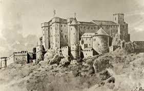

Inicio Sesión
Lugares de interes
Plantio

El Plantio es el estadio principal del maravilloso Burgos FC, que actualmente juega en Segunda Division Española de futbol profesional
Catedral de Santa María de Burgos

La catedral de Santa Maria de Burgos es una estructura dedicada a Dios.
Castillo de Burgos
Es un Castillo de Burgos que fue construido en el año X por el Rey X
Parque de La Isla

El Plantio es el estadio principal del maravilloso Burgos FC
Noticias
Hoy el Burgos FC, a conseguido la victoria ante el Zaragoza
Hoy el Burgos FC, a conseguido la victoria ante el Zaragoza